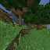

Chapitre 12
Deux pistes du menu passées à l'épreuve : la réparation de la boussole échoue une troisième fois, la mémoire des lieux visités produit le deuxième vrai succès de la campagne
Prérequis : Qu'est-ce que JEPA, et pourquoi apprendre à un programme à jouer à Minecraft avec ça ?, Le raccourci que le modèle essaie toujours de trouver (et comment on l'en empêche), Apprendre au modèle à imaginer la suite, Essayer 512 avenirs dans sa tête avant d'appuyer sur un bouton, Le grand saut vers le vrai Minecraft : quatre échecs, puis un agent qui coupe des arbres, Apprendre à fabriquer : la règle est comprise, le premier arbre reste hors de portée, La curiosité en panne, puis deux rustines qui marchent à moitié, Le mur est comportemental : une vraie première réussite, puis quatre preuves qu'affiner le signal ne suffit pas — et une cinquième qui confirme le diagnostic, Après les pistes A et C : la politique apprise a été promue, puis testée (suite au Chapitre 10), La piste apprise a été testée : elle non plus ne suffit pas — mais elle élimine deux explications et La campagne fait une pause : la boussole ne s'est pas éteinte, elle pointe à l'envers

Piste débutant
Là où on en était
Le Chapitre 11 s'est terminé sur une pause de travail et un menu de quatre pistes pour reprendre l'enquête sur le point de départ à froid (l'agent qui doit trouver son premier arbre sans jamais l'avoir vu). Aucune de ces pistes n'était encore lancée — c'était un menu, pas un plan engagé. Ce chapitre raconte ce qui s'est passé quand les deux premières, les moins chères, ont enfin été testées pour de vrai — toutes deux datées du 21 juillet 2026 dans le journal du projet. Les résultats sont très différents l'un de l'autre : l'un referme une porte pour la troisième fois de suite, l'autre en ouvre une nouvelle, avec un vrai succès à la clé — modeste, mais réel et honnête.
Piste 1 : réparer la boussole précisément là où elle se trompe — encore raté, et de façon plus précise
Rappel du Chapitre 11 : la boussole du projet (le score qui compare chaque histoire imaginée au souvenir d'« un arbre coupé », voir Chapitre 4) s'était révélée pointer à l'envers une fois sortie de son terrain d'entraînement — un arbre proche recevait un score plus bas qu'une prairie vide. La piste la moins chère du menu proposait de corriger ça avec une petite règle supplémentaire, entraînée cette fois avec des vrais exemples « proche » et « loin » pris directement sur le jeu de fabrication (pas sur les parties d'experts de Treechop, comme dans les tentatives précédentes du Chapitre 8).
Sur le papier, le résultat avait l'air d'être le meilleur de toute l'enquête : la nouvelle règle séparait mieux les images « proches » des images « lointaines » que toutes les tentatives précédentes, et elle réussissait même un tout nouveau test — juger, à la main, sur de vraies photos du jeu, si un arbre proche recevait bien un meilleur score qu'une scène sans arbre. Elle a eu raison 21 fois sur 24 (87,5%).
Mais un test plus profond a démonté ce résultat. Ce projet suit depuis longtemps une règle simple : toute nouvelle piste doit être vérifiée pour un piège déjà repéré deux fois (Chapitre 8, puis à nouveau au Chapitre 9 quand une réparation prévue avait empiré le même problème) — une règle de distance qui, au lieu de vraiment juger la distance à l'arbre, se contente en réalité de repérer si l'image est claire ou sombre (la luminosité de la scène). Cette fois, la vérification a été poussée un pas plus loin que prévu : quelqu'un a eu l'idée de vérifier si le jeu de test lui-même, celui qui servait à noter la règle « bien » ou « mal », n'était pas biaisé. Résultat : oui, il l'était, presque totalement — les images choisies comme « arbre proche » étaient, presque systématiquement, beaucoup plus sombres (forêt dense) que les images choisies comme « pas d'arbre » (prairie ouverte, plage). Le lien entre luminosité et étiquette était quasiment parfait.
Autrement dit : le beau résultat de 87,5% n'était très probablement pas une vraie preuve que la règle comprend enfin où se trouve l'arbre — c'était le même vieux raccourci (la luminosité) détecté une troisième fois, caché derrière un test qui, sans le vouloir, mesurait la même chose que le raccourci lui-même. C'est la troisième fois que ce piège précis apparaît, avec trois façons différentes d'essayer de le corriger (varier artificiellement la lumière à l'entraînement au Chapitre 9, changer les exemples d'entraînement ici) — et chaque fois, le raccourci « luminosité » reste plus fort que jamais. La leçon qui s'impose maintenant : ce raccourci vit très probablement dans le modèle de vision lui-même, celui qui a appris à voir en premier lieu (Chapitre 1-2) et que ces petites réparations ne touchent jamais — pas dans la façon dont on entraîne la petite règle posée par-dessus. Cette piste précise du menu est donc fermée, sauf à s'attaquer directement au modèle de vision de départ, ce qui est un chantier bien plus lourd, mis de côté pour l'instant.
Piste 2 : une mémoire des endroits déjà visités — construite, testée, et un vrai deuxième succès
La deuxième piste du menu proposait une idée différente : au lieu de comparer chaque image à un point de repère fixe (la boussole, dont on vient de confirmer une troisième fois qu'elle se trompe hors de son terrain d'entraînement), pourquoi ne pas donner à l'agent une mémoire toute simple des endroits qu'il a déjà explorés pendant l'épisode en cours, et le pousser à aller voir ailleurs ?
Le point important, respecté à la lettre depuis le Chapitre 11 : cette mémoire ne doit rien devoir à la boussole cassée. Elle est construite d'une façon complètement différente, sans aucun apprentissage : à chaque pas, l'agent connaît déjà l'effet de son propre geste (avancer, tourner à gauche, tourner à droite — comme un joueur qui compterait ses propres pas et ses propres virages les yeux fermés). En additionnant ces effets connus au fil de l'épisode, on reconstruit une position approximative sur une grille invisible, et on compte combien de fois chaque case de cette grille a déjà été visitée. Quand l'agent semble tourner en rond sans but, au lieu de le faire tourner sur lui-même (le vieux réflexe du Chapitre 7, qui ne peut rien trouver là où il n'y a rien) ou de foncer tout droit à l'aveugle (le Chapitre 8), on le pousse maintenant vers la direction la moins visitée de la grille.
Premier test, tout petit (3 épisodes) : le mécanisme se déclenche bien, se comporte visiblement différemment des anciens réflexes, et la carte de couverture grandit vraiment au fil du temps. Aucun signe du problème vu plusieurs fois avant (l'agent qui se met à répéter un seul geste presque tout le temps). Ce test ne visait qu'à vérifier que rien n'était cassé — pas encore à juger si ça marche.
Le vrai test, plus grand (20 épisodes) : 1 bûche coupée et des planches fabriquées sur 20 essais (5%), récompense moyenne 0,45 — environ 12% de mieux que la référence de MineRL pour un agent qui jouerait au hasard. C'est le deuxième résultat non nul de toute cette longue enquête, après la petite correction du Chapitre 8 (« exécuter plus longtemps son propre bon plan », 9,7% de réussite sur son propre lot de tests) — et c'est le premier à venir d'un mécanisme complètement différent : pas une meilleure façon de choisir les gestes, pas un meilleur jugement, mais une simple mémoire de « où suis-je déjà allé ». Dans l'épisode réussi, l'agent avait justement exploré une grande partie de la carte avant de trouver son arbre — et son comportement, au moment de couper, ressemblait à celui d'un vrai bûcheron (les mêmes gestes qui avaient déjà fonctionné dans le Chapitre 6), pas à un geste répété par accident.
Honnêteté sur ce que ce 1 sur 20 prouve, et ce qu'il ne prouve pas
Il faut être clair, comme pour chaque chiffre de ce projet : 5% de réussite est du même ordre de grandeur que les 9,7% du Chapitre 8 — pas une preuve statistique que cette nouvelle piste est meilleure à cette taille d'essai. Un test statistique classique ne permettrait pas de distinguer ces deux chiffres l'un de l'autre avec confiance.
Mais ce résultat a deux qualités qui le rendent réellement intéressant, pas juste un chiffre de plus : il est clairement au-dessus des deux tentatives précédentes qui avaient donné zéro sur huit essais chacune (Chapitres 9 et 10), et surtout, sur les 20 épisodes de ce lot, aucun ne montre le problème de verrouillage sur un seul geste qui avait gâché plusieurs tentatives précédentes (Chapitre 8). C'est donc la deuxième méthode indépendante — après la correction du Chapitre 8 — à produire un vrai succès sans jamais faire apparaître ce comportement cassé. Ce n'est pas une percée confirmée. C'est un vrai point positif, honnête, qui mérite d'être gardé et prolongé plutôt que rangé au tiroir.
Un dernier détail honnête : le lot de 20 épisodes a été géré par un processus qui a rencontré un problème technique d'infrastructure avant de pouvoir écrire son propre compte-rendu — les chiffres ci-dessus ont donc été vérifiés directement, épisode par épisode, dans les journaux bruts de l'exécution, plutôt que recopiés d'un rapport final qui n'a pas pu être produit.
Où en est le menu du Chapitre 11, maintenant
Sur les quatre pistes proposées au Chapitre 11 : la première (réparer la boussole) est maintenant fermée pour de bon, sauf réparation bien plus lourde du modèle de vision lui-même. La deuxième (la mémoire des lieux visités) est construite, testée, et donne un vrai signal positif à prolonger. Les deux dernières — un second cerveau plus lent pour chercher une forêt, ou copier des vraies parties humaines de recherche — restent, comme au Chapitre 11, non lancées.
Piste expert
Contexte
Le Chapitre 11 clôturait la campagne d'enquête sur le cold-start avec deux constats
convergents (génération d'action non-goulot, notation goal-centroid native de
ebwm.pt inversée hors distribution Treechop) et un menu de quatre pistes
candidates classées par coût/risque, aucune lancée. Ce chapitre couvre les attempts #11
et #12 de CLAUDE.md/docs/10_coldstart_engineering.md (PC,
2026-07-21) — les deux premières pistes du menu, exécutées dans l'ordre de priorité
annoncé.
Attempt #11 — correction de score ciblée sur le domaine Obtain (candidate direction 1) NO-GO
Troisième et plus nette confirmation d'un raccourci de luminosité dans l'encodeur figé.
Implémentation. scripts/train_value_projector_obtain.py :
reprend l'idée du projecteur de distance de l'attempt #7 (Destrade et al.,
arXiv:2601.00844), mais avec des paires proche/loin sourcées entièrement depuis
Obtain — les 40 démos MineRLObtainIronPickaxe-v0 réelles plus les
épisodes de couverture de l'attempt #3, zéro donnée Treechop. Ajout d'un gate
obligatoire inédit : une vérification de direction sur frames réelles étiquetées à la
main, tenue en réserve (l'attempt #7 n'avait jamais eu les moyens de faire tourner ce
test).
Gates offline — le meilleur résultat apparent de toute la campagne
| Métrique | Attempt #7 (Treechop+couverture) | Attempt #11 (Obtain seul) |
|---|---|---|
| Ratio de séparation | 7,9 | 11,26 |
| Ratio de direction Obtain | — (non mesuré ainsi) | 1,21 |
| Direction correcte par paire (étiquetage manuel) | — (gate inexistant) | 21/24 (87,5%) |
Le raccourci de luminosité, vérifié, est pire que toutes les variantes précédentes
| Variante | Corrélation avec la luminosité |
|---|---|
| Attempt #7, originale | 0,117 |
| Attempt #7, en jeu réel | -0,57 |
| ColorJitter « réparée » (suivi attempt #8) | 0,498 |
| Attempt #11, sourcée depuis Obtain | 0,643 |
Le développeur a poussé la vérification un pas plus loin que la consigne : le résultat
apparent de 87,5% de bonne direction a été lui-même testé contre le raccourci de
luminosité — corr(is_tree_close, luminosité) = -0,917 sur le jeu
d'étiquetage manuel lui-même. Les frames « arbre proche » (forêt, jungle) étaient
systématiquement bien plus sombres que les frames « pas d'arbre » (prairie, plage)
par construction de la façon dont ce jeu de test avait été assemblé. Le
résultat apparent était donc très probablement le même raccourci re-détecté, pas un
apprentissage géométrique authentique de la proximité à l'arbre. NO-GO correctement
prononcé ; le run de jeu réel a été volontairement sauté (pas d'évaluation en direct
dépensée sur un checkpoint auto-diagnostiqué comme confondu).
checkpoints/value_projector_obtain.pt conservé, mis de côté, non déployé —
même statut que value_projector_colorjitter.pt.
Leçon, désormais confirmée trois fois indépendamment (attempt #7 original, ColorJitter, et cette source Obtain) : toute petite tête entraînée par-dessus l'espace latent figé de
ebwm.ptretrouve la luminosité comme raccourci le moins coûteux disponible, quel que soit le domaine qui fournit les paires d'entraînement/validation — parce que le raccourci vit très probablement dans la représentation de l'encodeur figé lui-même, que ces trois tentatives n'ont jamais touché. Changer les données d'entraînement en aval change le récit que le projecteur se raconte sur lui-même, pas le raccourci qu'il utilise réellement.
Piste 1 du menu du Chapitre 11 fermée, sauf reprise sous forme d'un correctif côté
encodeur (fine-tune d'adaptateur ou contrainte explicite d'invariance à la luminosité
sur ebwm.pt lui-même, sous la discipline anti-collapse stricte du projet) —
hors périmètre d'un simple correctif en aval. Aucun checkpoint modifié hormis le nouveau
value_projector_obtain.pt (ebwm.pt, craft_wm_v4.pt
en lecture seule).
Attempt #12 — mémoire topologique de frontière (candidate direction 2) Testée
Construite, vérifiée, puis confirmée à N=20.
Cadrage. Conçue pour éviter par construction les deux modes d'échec
déjà connus d'un signal de couverture : RND (attempt #4B) converge sur le temps écoulé,
pas sur le contenu de la scène ; toute métrique de frontière construite sur la distance
latente de ebwm.pt hériterait de la confusion directionnelle confirmée à
l'attempt #10. Le choix : un signal de couverture sans aucune fonction apprise
et sans aucune dépendance à l'encodeur figé.
Implémentation. mine_jepa/ebwm/frontier.py::FrontierTracker
: position (x, y, yaw) reconstruite par calcul mort (dead reckoning) à
partir de la sémantique déjà connue des actions discrètes exécutées — aucune fonction
apprise, aucune dépendance à ebwm.pt ou craft_wm_v4.pt. Binnée
dans une grille de compteurs de visite ; au déclenchement, vise le cap voisin le moins
visité. Câblé comme nouvelle option scan.macro: "frontier"
(configs/play_craft_commit4_frontier.yaml) — planner.py
lui-même n'est pas touché (pure macro, aucun changement de notation), et toute autre
valeur de scan.macro reste identique bit-pour-bit.
Sanity check N=3 : propre, aucun crash. Mécanisme visiblement distinct
des macros turn/bushwhack existantes (log confirmé : virage vers le cap le moins
visité, puis croisière) ; unique_cells_visited croît sur l'épisode
(419/939/970). Aucun verrouillage (part maximale d'une seule action 45%). 0/3 succès —
non informatif à ce N, ce n'était pas l'objet du sanity check.
⚠️ Dette signalée en cours de route, pas introduite par cette tentative
: scripts/play_craft.py ne câble jamais agent.seed dans
l'environnement MineRL pour aucune config — agent.seed: 0 dans ces YAML
est actuellement un no-op. Dette de reproductibilité déjà présente sur toute la
campagne, pas spécifique à l'attempt #12.
Lot de confirmation, N=20 — le résultat qui compte
Seed nominalement 0 (sous réserve de la mise en garde ci-dessus).
- 1/20 bûches coupées + planches fabriquées (5,0%), reward moyen 0,45 (+12% contre la référence aléatoire de MineRL, ~0,4).
-
Deuxième résultat non nul de toute la campagne, après
commit_length=4seul (pooled 3/31, 9,7%) — et premier à venir d'un mécanisme entièrement hors génération d'action / notation (couverture pure, sans fonction apprise, sans dépendance à l'encodeur). -
L'unique succès : reward=9, +4 planches,
steps=3000,unique_cells_visited=908(parmi les plus hauts du lot), profil d'action a14=42%/a13=12%/a6=10% — sain, pas un pic de verrouillage. - Sur les 20 épisodes, concentration d'action normale tout au long (part maximale d'une seule action 63%, la plupart entre 20-45%) — aucun verrouillage nulle part dans ce lot, à l'opposé direct des attempts #6 et #8 (raffinement CEM et priming du pool avaient tous deux régressé vers des profils d'action concentrés et figés).
Cadrage honnête. 1/20 (5%) est du même ordre de grandeur que le taux de
base à 9,7% — pas une amélioration statistiquement prouvée à ce N (un test de Fisher
exact ne distinguerait pas les deux). Mais c'est clairement au-dessus des 0/8 de chacune
des attempts #8 et #9, et c'est notable pour produire un vrai succès sans la moindre
pathologie comportementale — le deuxième mécanisme indépendant (après
commit_length) à le faire. Pas une percée confirmée ; un vrai point de
donnée positif, à garder et à prolonger plutôt qu'à ranger.
Note de processus. Le lancement du lot de 20 épisodes a rencontré une
erreur d'infrastructure (limite de session) avant de pouvoir produire son propre
compte-rendu formel. Les chiffres ci-dessus ont été extraits et vérifiés indépendamment,
épisode par épisode, directement depuis le journal brut d'exécution
(logs/coldstart_attempt12_frontier_n20.log), pas recopiés d'un rapport qui
n'a pas pu être livré.
Où en est le menu du Chapitre 11, maintenant
- Correction de score ciblée Obtain — fermée (attempt #11, NO-GO), sauf reprise côté encodeur.
-
Mémoire topologique de frontière — construite, vérifiée, confirmée à
N=20 : signal positif réel, pas une preuve statistique, sans pathologie
comportementale ; piste à prolonger (N plus large, ou combinaison avec
commit_length/autres leviers non pathologiques). - H-JEPA hiérarchique — non lancée, coût/risque le plus élevé du menu.
- Fine-tuning BC sur recherche humaine — non lancée, déjà déprioritisée au Chapitre 11.
ebwm.pt et craft_wm_v4.pt restent intacts sur les deux
attempts de ce chapitre : l'attempt #11 n'a entraîné qu'un projecteur séparé et non
déployé ; l'attempt #12 n'introduit aucun paramètre appris.
Références (déjà vérifiées, tirées de docs/references/index.md, aucune nouvelle citation dans ce chapitre)
- Destrade, Bounou, Le Lidec, Ponce, LeCun, Value-guided action planning with JEPA world models, arXiv:2601.00844 (2026) — la méthode de projecteur de distance reprise (avec une nouvelle source de supervision) dans l'attempt #11.
-
Burda, Edwards, Storkey, Klimov, RND, arXiv:1810.12894 (2018) — le mécanisme de
couverture écarté par construction lors de la conception de l'attempt #12
(
docs/09_curiosity_coldstart.md).
Ce chapitre ne s'appuie sur aucune référence bibliographique nouvelle : le mécanisme de
mémoire de frontière de l'attempt #12 (compteur de visites par calcul mort, sans
fonction apprise) est décrit dans CLAUDE.md/docs/10_coldstart_engineering.md
de façon informelle, dans l'esprit des méthodes d'exploration pilotées par la couverture
d'états (par ex. Go-Explore) — cette famille de méthodes n'a pas d'entrée vérifiée dans
docs/references/index.md à ce jour et n'est donc pas citée ici avec un
identifiant arXiv.
Achievement : deuxième succès réel de la campagne — une mémoire des lieux visités, sans fonction apprise ni pathologie comportementale
La mémoire topologique de frontière (attempt #12) — un compteur de cases visitées
reconstruit par calcul mort, zéro poids appris, zéro dépendance à la boussole cassée —
produit 1 succès sur 20 épisodes de confirmation (5%, reward moyen 0,45, +12% contre la
référence aléatoire de MineRL) : le deuxième résultat non nul de toute la
campagne cold-start, après commit_length=4 au Chapitre 8, et le
premier à venir d'un mécanisme entièrement différent. Sur les 20 épisodes, aucun ne
montre le verrouillage comportemental qui avait gâché plusieurs tentatives précédentes.
Dans le même chapitre, la piste de réparation de la boussole (attempt #11) referme une
porte pour la troisième fois — le raccourci de luminosité vit dans l'encodeur figé, pas
dans les données servant à entraîner la petite règle posée par-dessus.